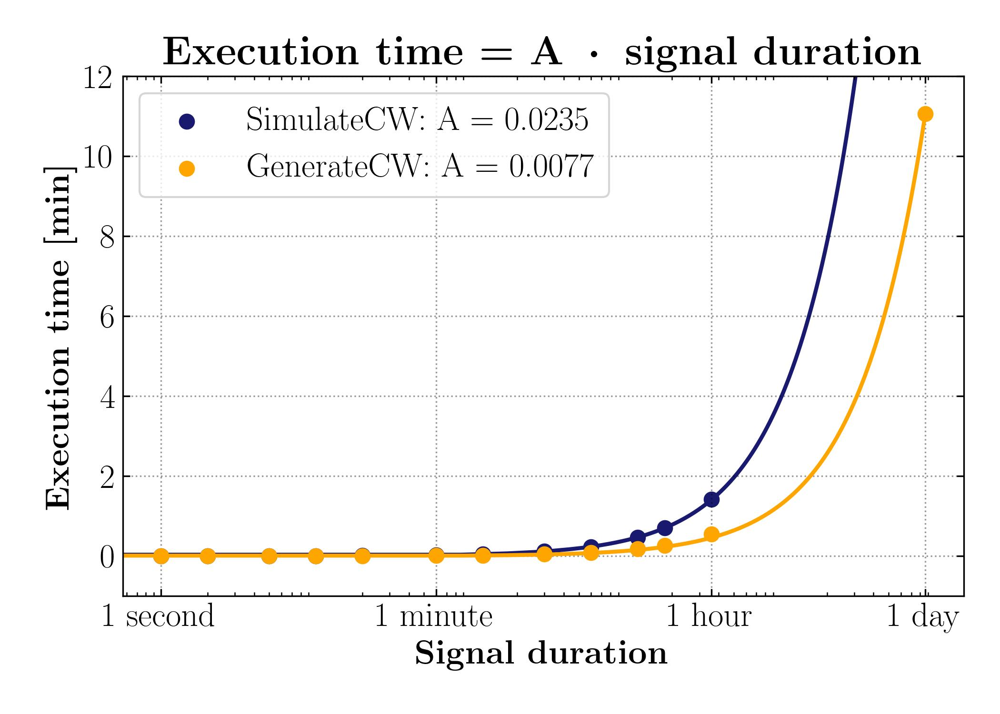

The implementation is build as a module for first ET-MDC,
described by T. Regimbau and J. Suresh (2025).
Please note that this is the first version of the CW implementation,
so fell free to contact me , if you have any comments or ideas!
The usage may change.
Currently, the implementation can be only used in C, but with time it may
be accesible by a Python API.
Instalation & compilation
When using the code, in addition to the libraries required by ET-MDC1,
there will be needed two libraries:
The most straightforward way to install the libraires is to use Conda.
The code is compiled using a Makefile. The command:
make ALL
does all the work.
Structure
The implementation of continuous gravitational wave signal generation
in ET-MDC can be performed in two ways:
- Direct use of the default list included with the package
- Custom pulsar population synthesis with list_cw code
Finally, the source list is used when creating CW signal in simul.
All available commands are visible by
./list_cw --help. Which prints:
Options:
-h --help print this message
-i | --in <filename> input filename from Indri in HDF5 format (defaults to 'CW_Indri')
-o | --out <filename> output txt filename (defaults to 'cw')
-n | --num <num> number of NS in population
-s | --seed <seed> seed for random generation
-e | --eps0 <epsilon> initial ellipticity of NS at formation (defaults to 7.4e-6)
-d | --decay <eta> decay timescale for the ellipticity in Myr (defaults to 1e4, no decay)
--verbose verbose mode
--params additional parameters (age, distance, ellipticity, period, period derivative)
The CW sources list is generated based on the previously
synthesized population of 100 000 neutron stars in the Milky Way gravitational
potential - CW_Indri.hdf.
To synthesize a pulsar population, I used the Indri
package described in Cieślar et al. (2020) with
the rotational model.
I included the previously generated population as the package itself is too large to add to MDC,
but if you want to create your own pulsar population or need a bigger one -
the list_cw input file can be created via Indri as:
./Model -GWPrep -c MCMC.ERotAll.xml -o <filename>.hdf -n <population count>
The minimal query that generates a default population for all data from
models/CW_Indri.hdf is: ./list_cw. We then get a file lists/cw.txt
containing parameters in reference time:
- \(h_0\)
- \(\text{RA, DEC [rad]}\) - location of the source
- \(f_0 \text{ [Hz]}\) and \(\dot f \text{ [Hz}^2]\) - WAVE frequency (double the spin) and spindown
- \(\psi_0 \text{ [rad]}\) - initial phase
- \(\phi \text{ [rad]}\) - polarization angle
- \(i \text{ [rad]}\) - inclination
- \(\alpha \text{ [rad]}\) - angle between rotation axis and deformation axis
The --params flag adds additional parameters to the output file,
which are useful for analysis:
- \( \text{Age [Myr]} \)
- \( \text{Distance [kpc]} \)
- \( \epsilon \) - ellipticity of the pulsar given the exponential decay model \( \epsilon = \epsilon_0 \exp{(\text{age}/ \eta)} \)
- \( P \text{ [s], } \dot P \text{ [s/s]} \) - pulsar spin period and its derivative
Default list
It is a list of 100 000 CW sources attached with the package.
The file was created with default parameters from the list_cw code
and a --params flag. It provides the easiest way of generating a CW signal.
Custom source?
If you want to simulate a gravitational wave signal from rotating neutron star
with your own known parameters, you can just write the parameters to the file and run
the simul programme. An example:
Simul input file should contain columns:
h0, RA, DEC, f0, df0/dt, initial_phase, polarization, inclination, alpha
Fill the file <filename>.txt with your parameters and run:
./simul --cw --cw-in <filename> --ET <other flags...>
The code accepts both the standard version of the input file, and an extended via the --params flag version.
All available commands are visible by ./simul --help, but CW relevant parameters are:
Options:
--cw simulate CW
--cwacc simulate CW to best accuracy
...
-p CW: number of sources in signal
-e CW: seed
-P CW: custom input filename in lists/ (defaults to models/list_CW.txt)
The simulation can be run having a list of sources from list_cw or using a
previously generated list of 100 000 sources in models/list_CW.txt.
The CW module in ET-MDC is implemented with two functions from LALPulsar:
-
XLALSimulateExactPulsarSignal()
Which provides the best possible precision, but at the cost of computational time and memory.
Short signals preffered.
See documentation
.
-
XLALGeneratePulsarSignal()
Best in performance for longer signals.
See documentation

The accuracy approach is approximately 2.5 times slower than the performance one.
Methods' execution time can be descrived approximately by linear model.
Jobs and segments
The simulation has support for generating signals in segments. The
GPS time parameters are taken from the input file, and the initial phase and frequency are
extrapolated to the new segment start time.
Ephemeris
CWs are a long-duration signals, this means the modulation should take into
account the detector's movement relative to the source. For this purpose, the ephemeris of the
Sun (input/sun00-40-DE405.dat) and Earth's (input/earth00-40-DE405.dat) are used. As
for now the code contains ephemeris spanning time between 2000-2040.
Examples
Additional to the examples present on the poster:
-
./simul --start-time 1000000000 --sampling-rate 8192 --ET --cwacc --cw-num 2 --duration 60 --cw-in myList
Generates a precise minute-long signal for two sources from an user-generated file
lists/myList.txt. The sampling rate is 8192 Hz. The result is stored in three frame files.
The command can be rewritten in a shorter format:
./simul -t 1000000000 -r 8192 --ET --cwacc -p 2 -l 60 -P myList
-
./simul --sampling-rate 4096 --ET --cw --ascii --cw-num 1 --duration 2048 --noise --job 3
Generates a third signal segment of 2048 seconds in duration. Starting at the default GPS time.
The signal includes noise based on the ET PSD. The signal is stored in an ASCII file.
Or in a shorter format:
./simul -r 4096 --ET --cw --ascii -p 1 -l 2048 --noise -j 3